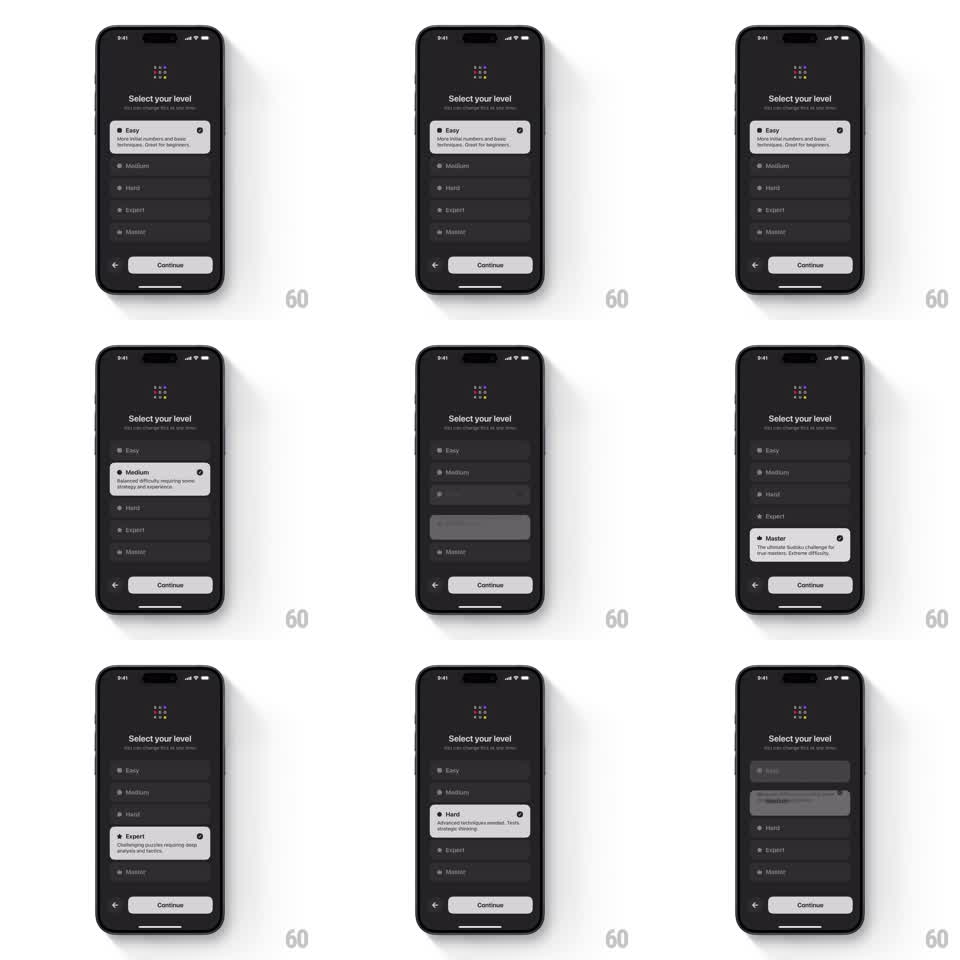

Media
Frame-by-frame

Rebuild this interaction 1:1: Sudoku a Day's level picker - an accordion list where tapping a level expands its white detail card while the previously open level collapses back to a dark row.

Rebuild this interaction 1:1: Sudoku a Day's level picker - an accordion list where tapping a level expands its white detail card while the previously open level collapses back to a dark row. ## Integration Integration: stack-agnostic spec - springs given as stiffness/damping, timed motions as duration + curve; map every value to your framework and animation library of choice. ## Scene Dark screen with the dot wordmark, "Select your level" title, and subtitle. A vertical list of five rows: Easy, Medium, Hard, Expert, Master - each a dark card with a small square icon, name, and a radio circle. The selected row expands into a white card with a two-line description (Easy: "More initial numbers and basic techniques. Great for beginners", Medium: "Balanced difficulty requiring some strategy and experience", Hard: "Advanced techniques needed. Tests strategic thinking", Expert: "Challenging puzzles requiring deep analysis and tactics", Master: "The ultimate Sudoku challenge for true masters. Extreme difficulty"). Continue button pinned at bottom. ## Motion spec Pattern: accordion expansion with a single open item. - Tapping a collapsed row expands it: the card animates its height open (spring ~340/28) as the background flips dark -> white (200ms) and the description fades in over the last 60% of the expansion (180ms). - The previously expanded row collapses in the same beat (spring ~340/30, white -> dark 200ms), so exactly one card is open at a time. - Rows below the expanding card slide down with it; rows above never move. - The radio circle fills on the expanded card (scale 0.5 -> 1, spring ~400/20, 100ms delay). ## Calibration - Expansion and collapse run in parallel, not sequentially - the list's total height breathes smoothly. - The description wraps inside the card's fixed width; the card grows only vertically. ## Reduced motion Cards swap expanded/collapsed with a 200ms crossfade, no height travel. ## Don't miss - The expanded card is white with dark text; collapsed rows are dark gray with light text. - Continue stays pinned; the list never pushes it off screen.